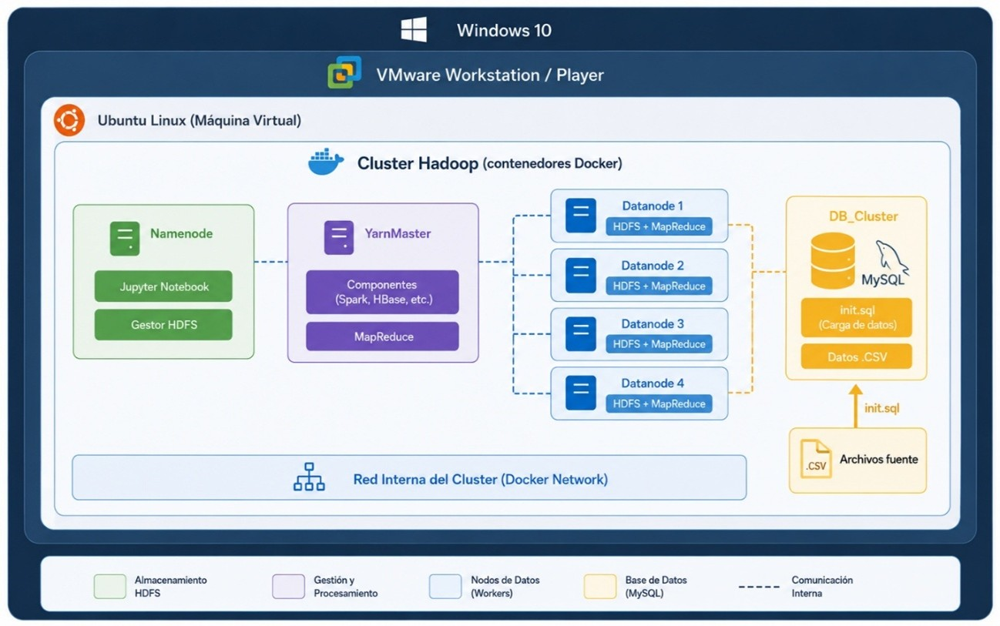

Ejercicio Final 2: Levantar contenedor db_cluster - MySQL
Despliegue de una base de datos MySQL para la explotación de los datos generados durante el procesamiento Hadoop.
Introducción
Una vez finalizados los procesos de procesamiento y transformación de los datos mediante el clúster Hadoop, es posible utilizar los resultados obtenidos para su posterior explotación mediante una base de datos relacional.
En este ejercicio se propone levantar un contenedor denominado db_cluster, basado en MySQL, que permitirá cargar los datos generados previamente en formato .csv y almacenarlos en una base de datos estructurada.
La utilización de un contenedor independiente permite separar la capa de almacenamiento y explotación relacional del resto de componentes que forman el clúster Hadoop.
Arquitectura del despliegue
La siguiente figura muestra la arquitectura que será desplegada cuando se necesite utilizar un contenedor con MySQL y realizar la carga de los datos compartidos en formato .csv.

Figura 37. Cluster Hadoop II. Fuente: elaboración propia con apoyo de inteligencia artificial generativa (ChatGPT/OpenAI), adaptada por el autor.
1. Traslado del fichero CSV al directorio del contenedor
Lo primero que debemos realizar antes de levantar el contenedor
db_cluster es trasladar los datos del fichero
.csv generado por el clúster Hadoop y ubicado
en el directorio compartido
/media/notebook al directorio utilizado por
db_cluster para cargar los datos.
El fichero CSV debe encontrarse en el directorio
dataset antes de realizar la construcción de
la imagen Docker, ya que será utilizado posteriormente
durante el proceso de inicialización del contenedor.
2. Compilación de la imagen Docker
Antes de levantar el contenedor db_cluster, es necesario compilar la imagen que utilizará el contenedor para cargar los datos CSV.
Para ello, debemos situarnos en el directorio donde se encuentra el Dockerfile correspondiente al contenedor db_cluster y ejecutar el siguiente comando:
Este comando construye una nueva imagen Docker denominada db_cluster utilizando como referencia el Dockerfile existente en el directorio actual.
Importante
Cualquier cambio que el estudiante realice en el fichero
init.sql o en la carga de los ficheros
.csv requerirá volver a realizar el proceso de
compilación mediante docker build, de forma que la
imagen quede preparada para el nuevo despliegue del contenedor.
3. Levantar el contenedor db_cluster
Una vez compilada la imagen, ya es posible levantar el contenedor para realizar la carga automática de los datos.
Para ello debemos ubicarnos en el directorio raíz del proyecto:
Desde este directorio se ejecutará el fichero docker-compose-dbcluster.yaml mediante el siguiente comando:
La opción -d permite iniciar el contenedor en segundo
plano, dejando disponible nuevamente la terminal para continuar
trabajando.
Despliegue mediante Docker Compose
La siguiente figura muestra el proceso de despliegue del contenedor db_cluster mediante Docker Compose.

Figura 43. Docker Compose db_cluster. Fuente: elaboración propia, adaptada por el autor.
Como resultado del comando anterior se iniciará el contenedor db_cluster y se realizará el proceso de inicialización definido para la base de datos.
4. Comprobar los registros del contenedor
Una vez levantado el contenedor, es recomendable comprobar si se ha producido algún error durante su inicialización o durante la carga de los datos.
Para consultar los registros del contenedor se utilizará:
Este comando permite visualizar los mensajes generados por el contenedor y comprobar si el proceso de creación de la base de datos y carga de información se ha realizado correctamente.
5. Acceder a MySQL
Para acceder al servidor MySQL que se está ejecutando dentro del contenedor, se utilizará el siguiente comando:
El sistema solicitará la contraseña correspondiente al usuario root.
uned
6. Seleccionar la base de datos
Una vez dentro del cliente de MySQL, es necesario indicar la base de datos que se desea utilizar.
A partir de este momento será posible consultar las tablas existentes y acceder a los datos que hayan sido cargados durante la inicialización del contenedor.
7. Comprobación de los datos cargados
Una vez seleccionada la base de datos mydatabase, es posible acceder a las tablas creadas durante el proceso de inicialización.
En este ejercicio, se ha cargado como ejemplo la tabla Corpus_Meddocan, utilizando los datos procedentes del fichero .csv generado en las etapas anteriores del proyecto.
Base de datos utilizada
Base de datos:
mydatabase
Tabla:
Corpus_Meddocan
De esta forma, los datos previamente procesados mediante el ecosistema Hadoop quedan disponibles en una estructura relacional que permite realizar consultas y análisis posteriores.
Propuesta de experimentación para el estudiante
Las características de la base de datos creada como prueba pueden modificarse para que el estudiante pueda experimentar con el funcionamiento de MySQL y comprender la relación entre los datos generados previamente y su almacenamiento en una base de datos relacional.
Se propone realizar modificaciones como:
- Cambiar el nombre de la tabla.
- Modificar los tipos de datos de las columnas.
- Añadir nuevos campos.
- Crear nuevas tablas.
- Realizar consultas sobre los datos almacenados.
- Analizar la información procedente del corpus MEDDOCAN.
Conclusión
Mediante este ejercicio se completa el flujo de procesamiento iniciado en las etapas anteriores del proyecto. Los datos procedentes del corpus MEDDOCAN son procesados inicialmente mediante el clúster Hadoop y posteriormente transformados a formato CSV para facilitar su carga en una base de datos relacional.
El contenedor db_cluster proporciona un entorno independiente para ejecutar MySQL, permitiendo almacenar y consultar los resultados obtenidos sin modificar la infraestructura principal del clúster Hadoop.
De esta manera, el estudiante puede observar el recorrido completo de los datos: desde los documentos clínicos originales, pasando por el procesamiento distribuido mediante Hadoop, hasta su almacenamiento estructurado en una base de datos MySQL.
Este ejercicio se corresponde con el proceso de despliegue del contenedor db_cluster y la carga de los datos procesados por el clúster Hadoop en una base de datos MySQL.